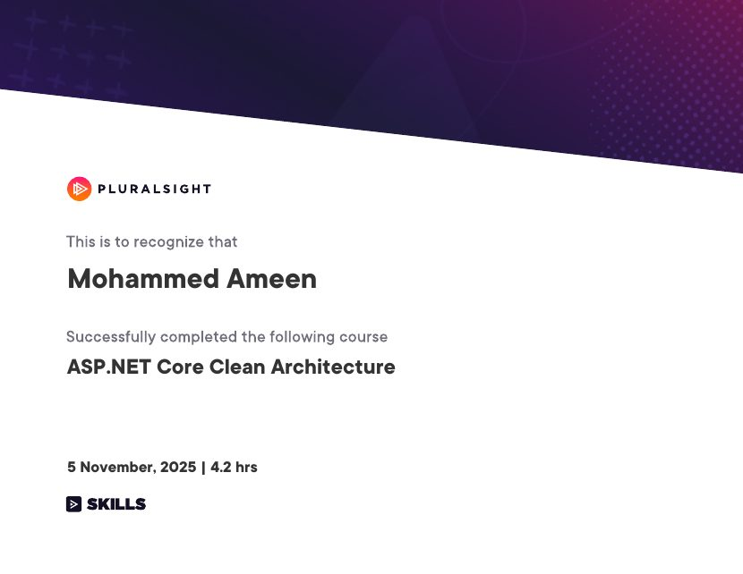
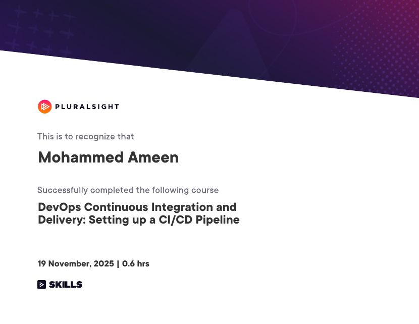
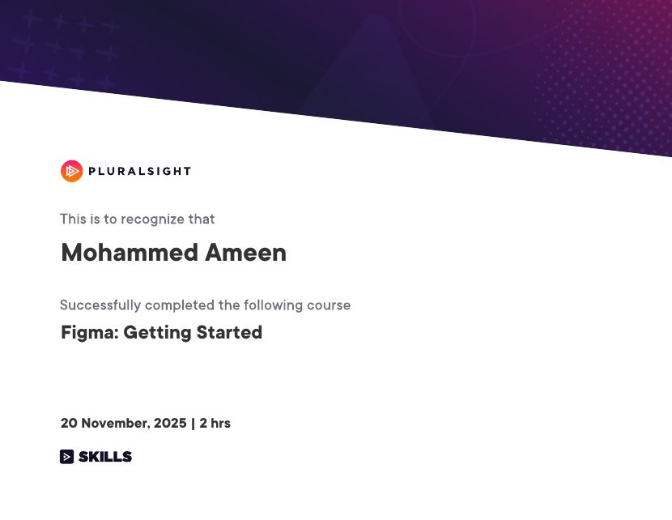
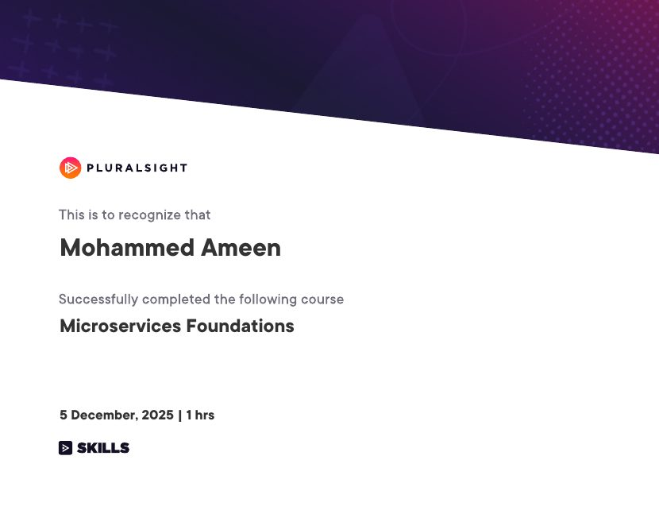
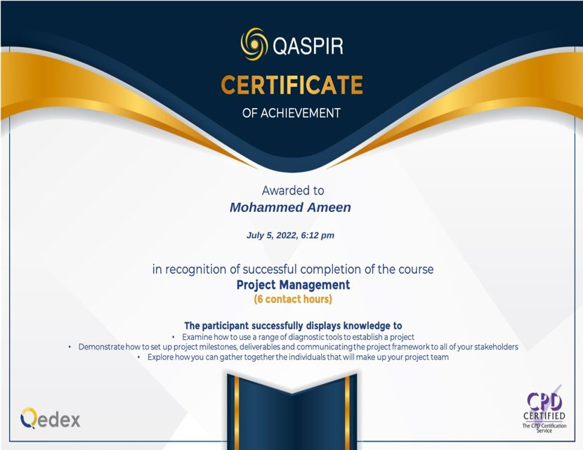

Secure public services
Integrations, identity, credentials, payment flows and the APIs behind digital services.
 Mohammed Ameen
Mohammed Ameen
PROFILE
A full-stack engineer who enjoys architecture, hands-on building, product thinking and picking up whatever a solution needs.
I'm a senior software developer and solution architect with 9+ years in full-stack development, system integrations and enterprise software. I've worked in government, corporate, hospitality and education, and on a manufacturing ERP, across web, mobile, desktop, APIs, hardware integrations and automation.
I like being involved from start to finish: architecture, API design, integration, building, optimizing, testing, working with stakeholders and getting things ready for production.
CURRENT FOCUS
Integrations, identity, credentials, payment flows and the APIs behind digital services.
Check-in and check-out, kiosks, PMS, payments, scanners, key systems and tourism interfaces.
University management, exams, reports, surveys, certificates and identity verification.
EDUCATION
P.A. College of Engineering, Visvesvaraya Technological University, Belagavi, India · 2017
UAE Ministry of Education degree equivalency attestedCERTIFICATIONS
I keep learning on the side. Each card opens the original certificate.

Nov 5, 2025 · 4.2 hrs
View certificate ↗
Nov 19, 2025 · 0.6 hrs
View certificate ↗
Nov 20, 2025 · 2 hrs
View certificate ↗Dec 5, 2025 · 1.8 hrs
View certificate ↗
Dec 5, 2025 · 1 hr
View certificate ↗
July 5, 2022 · 6 contact hours · CPD certified
View certificate ↗Issued Jul 2024
Issued Jul 2024
Issued Jul 2024
Issued Jul 2024
Issued Jul 2024
Issued Jul 2024
Issued Mar 2023
Issued Mar 2023
HONORS & AWARDS
Employee of the month.
Awarded by the Department of Computer Science and Engineering.